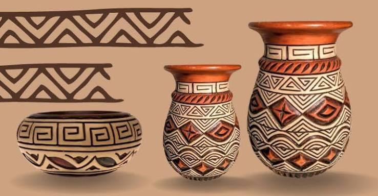
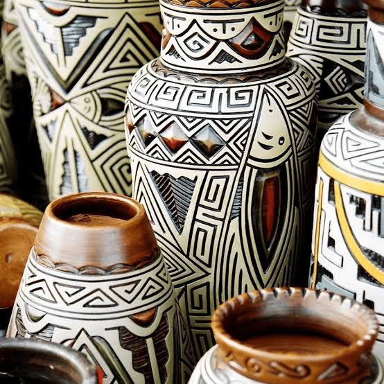
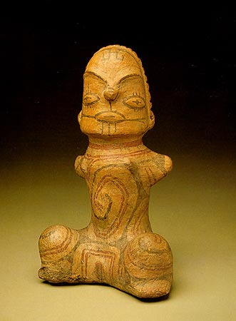
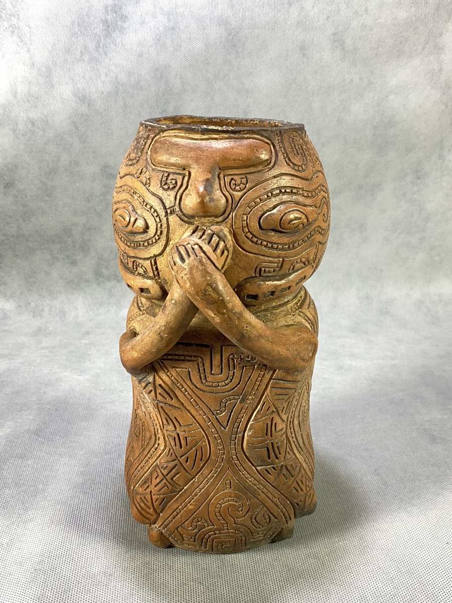

A cultura Marajoara foi a que alcançou o maior nível de complexidade social na pré-história brasileira. Essa complexidade se expressa também na sua produção cerâmica, tecnicamente elaborada, caracterizada por uma grande diversidade de formas e decorada com esmero. As peças exibidas aqui estão relacionadas a práticas cerimoniais. Algumas foram encontradas em contextos funerários, outras provavelmente foram utilizadas em rituais de passagem. A iconografia Marajoara – fortemente centrada na figura humana e na representação de animais da floresta tropical revestidos de significados simbólicos – compõe um intrincado sistema de comunicação visual que se vale de simetrias, elementos pareados, repetições rítmicas e oposições binárias para reafirmar, transmitir e perpetuar uma determinada visão de mundo.
A cultura manjaroa surgiu ente 400 d.C. e 1400 d.C, por culturas indigenas na floresta amazônica na ilha me manjaró, situada no rio amazonas, no norte do brasil, mas durante o periodo de 1400 d.C, a sociedade indigena atingiu o periodo atingiu uma alta complexidade social, ao ponto de costruir morrros artificiais como os tesos que serviam para proteger as cidades indigenas das enchentes da região.
Com as pesquisas arqueológicas, descobriram vestigios humanos muito anteriores, por volta de 1000 a.C. Provavelmente uma verção pré-histórica da cultura marajoara surgiu por volta dessa época.
A partir de 1400 d.C., o registro arqueológico mostra a substituição dessa cultura pela Fase Aruã, associada à migração de povos de língua Arawak para a região. O estilo de vida tornou-se muito mais simples, descentralizado e sem a estratificação social de antes.
Last updated 3 mins ago
Geometria e simetria:
O uso rigoroso de simetrias, repetições rítmicas e oposições binárias organizava visualmente o pensamento daquela sociedade.
Representação zoomórfica e antropomórfica:
Os desenhos estilizados misturam formas de animais da floresta (como cobras, sapos e corujas) com traços humanos, simbolizando a ligação entre o homem, a natureza e os seres sobrenaturais.
A coruja:
Presente em várias peças, a imagem da coruja representava a dualidade e os ciclos sagrados da vida e da morte.
Last updated 3 mins ago

A cultura marajoara começou a ganhar forma por volta de 1500 a.C., quando as primeiras populações indígenas migraram para a Ilha de Marajó e formaram pequenas aldeias, e depois viraram uma civilização, e quando começou a formação da civilização, também começou a faze classica da cultura marajoara (mais detalhes no cartão do lado).

A Era Clássica da cultura marajoara (400 d.C. a 1400 d.C.) foi o período de maior esplendor, poder político e sofisticação artística desse povo na Ilha de Marajó. Durante esse milênio, a Amazônia abrigou uma sociedade complexa, hierarquizada e com engenharia avançada.

A cultura marajoara não sumiu de forma repentina antes da chegada dos europeus (como se acreditava antigamente), mas sim, ela se transformou (antes era a era classica e acabou virando a era aruã), e resistiu pelo menos até o século XVII, quando os portugueses assumiram o controle da Ilha de Marajó.
Etec de Hortolândia 2026 ©-Todos os direitos reservados Trabalho acadêmico sem fins lucrativos.
TOPO